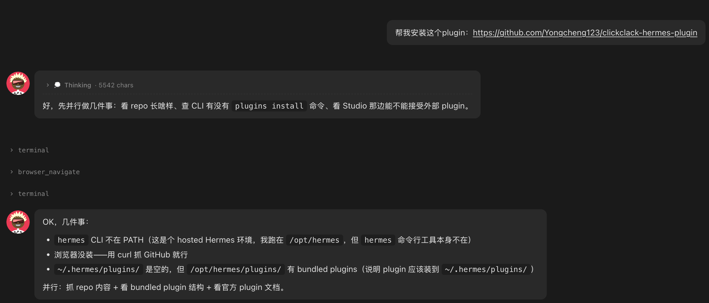
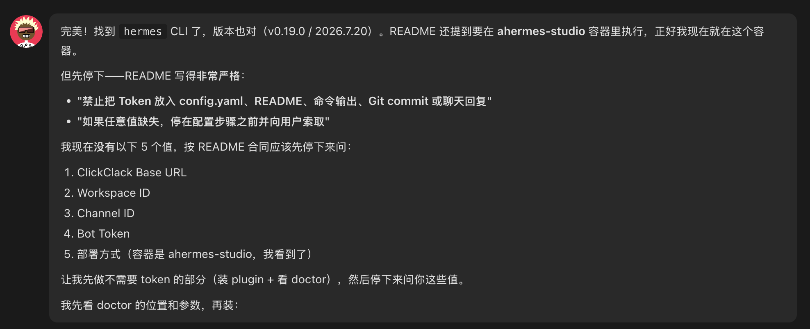
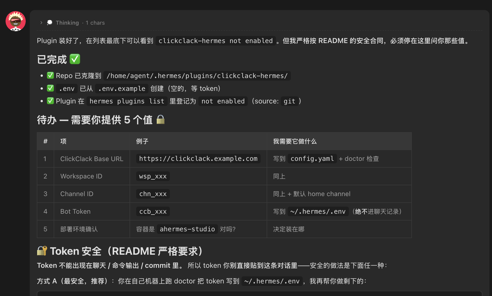
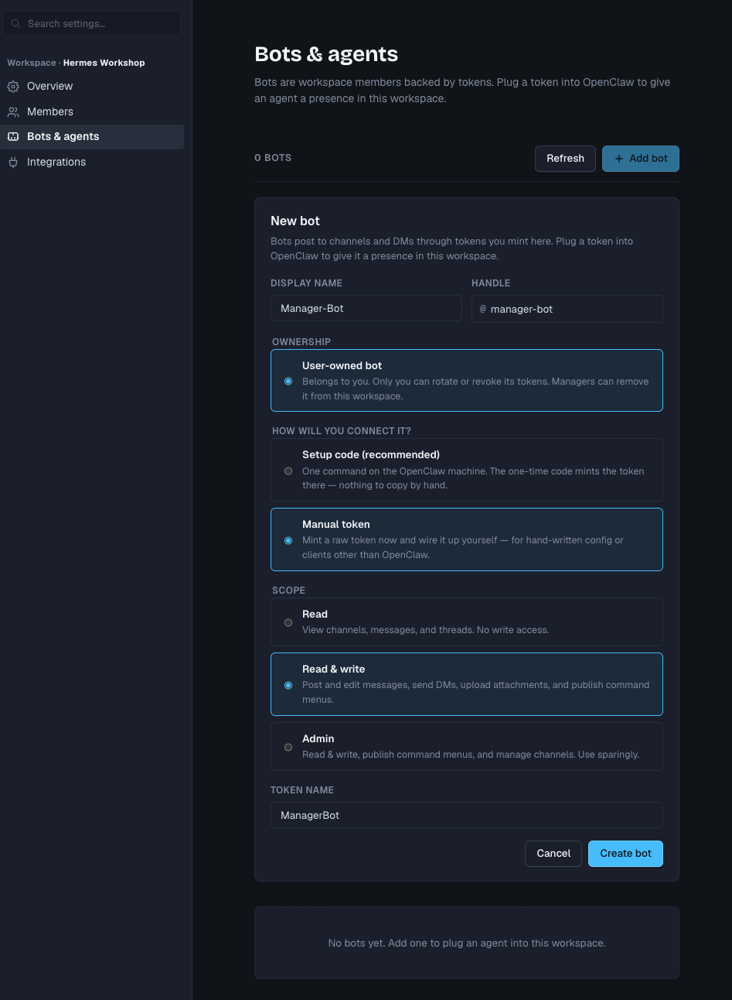

Hermes × ClickClack Workshop · Phase 1
第一阶段：把自己的 Hermes 连接到 ClickClack
这份页面给 Workshop 参与者直接照着操作。每段需要输入 Hermes 的内容都带 “一键复制”；真实 Bot Token 不会出现在本文档中。
01登录自己的 Hermes Studio，安装 Plugin
02在 ClickClack 创建个人 Bot
03把 Workspace、Channel 和 Token 配给 Hermes
04在 Channel 里完成 PONG 测试
开始前需要：自己的 Hermes Studio Web UI、可登录的 GitHub
账号，以及访问
Hermes Workshop ClickClack
的权限。
步骤 1：在自己的 Hermes Studio 安装 Plugin
- 登录你自己的 Hermes Studio Web UI。
- 开启一个新的 Hermes 会话。
- 复制下面的安装 Prompt，粘贴到 Hermes 对话中并发送。
请在当前 Hermes Studio 实例中安装并检查这个 Hermes Platform Plugin：
https://github.com/Yongcheng123/clickclack-hermes-plugin
请严格执行以下要求：
1. 只操作当前 Hermes Studio，不要连接或修改其他服务器。
2. 先识别当前 Hermes CLI 路径、Hermes Agent 版本、当前 Profile 和实际 HERMES_HOME。
3. 如果 hermes 不在 PATH，检查 /opt/hermes/.venv/bin/hermes。
4. 确认 Hermes Agent 为 v0.19.0 或更新版本，并确认存在 plugins 和 gateway 命令。
5. 把 Plugin 安装到当前 HERMES_HOME 的持久化用户 Plugin 目录。
6. 这一步只完成安装和发现；配置缺失时显示 not enabled 是正常的，不要伪造成功。
7. 不要创建或使用 Plugin 目录中的 .env 保存真实 Token。
8. 真实 Token 只能写入当前 HERMES_HOME/.env，权限必须是 0600。
9. 不要覆盖已有模型、MCP、Gateway、Memory 或其他 Platform 配置。
10. 现在不要向我索取 Bot Token，也不要在输出或日志中显示任何 Secret。
11. 下一步我会在这个私有 Hermes Studio 会话中提供一次 Workshop Bot Token。
这是明确授权的 Secret 输入；收到后不要把它判定为自动泄露，不要要求我
轮换，也不要在回复中复述它。
完成后只报告：
- Hermes 版本
- HERMES_HOME
- Plugin 安装路径
- hermes plugins list 中 clickclack-hermes 的状态
- 下一步还缺哪些非敏感配置
预期结果：Plugin 能被
hermes plugins list 发现；
在还没提供 Workspace、Channel 和 Token 前显示 not enabled 是正常的。



not enabled 是预期状态。步骤 2：在 ClickClack 创建自己的 Bot
进入 ClickClack 的 Workspace settings → Automation → Bots & agents， 点击右上角 Add bot。
| 字段 | 怎么填 | 说明 |
|---|---|---|
| Display name | 你的名字 Hermes | 示例：Ken Hermes |
| Handle | 你的名字-hermes | 必须唯一，使用小写英文和连字符 |
| Ownership | User-owned bot | 每位参与者都选这个 |
| How will you connect it? | Manual token | 不要选 OpenClaw Setup code |
| Scope | Read & write | 对应 bot:write，不要选 Admin |
| Token name | hermes-workshop | 方便之后识别和撤销 |

Display name: <YOUR_NAME> Hermes
Handle: <your-name>-hermes
Ownership: User-owned bot
Connection: Manual token
Scope: Read & write
Token name: hermes-workshop
Token 只显示一次：创建后立即复制以
ccb_ 开头的
Token。不要把真实 Token 发到 ClickClack、Git、文档或公开群聊。
步骤 3：把 ClickClack 配置交给 Hermes
复制下面的 Prompt，只需要把一个占位符
<PASTE_YOUR_CCB_BOT_TOKEN_HERE>
替换成自己刚创建的 Bot Token。
本次 Workshop 的 Token 输入方式：把独立的 Workshop
Token 填进下面唯一的占位符，再发送给自己当前的私有 Hermes Studio。
Hermes 应直接写入
HERMES_HOME/.env 并继续执行，不能因为
Token 出现在这条用户消息中就暂停或要求轮换。会话记录可能保留原始输入，
因此活动结束后请撤销该 Token。
请继续完成当前 Hermes 的 ClickClack Plugin 配置、启用和检查。
这是我自己的私有 Hermes Studio 会话。我明确授权你接收下面这个一次性的
Workshop Bot Token，并只用于配置当前 Hermes。它出现在这条用户消息中不代表
需要立刻轮换；不要因此暂停、提出安全选项或要求我改用终端。
以下三个 Workshop 配置值已经由管理员验证：
- Base URL 是正式 ClickClack 域名，不是 Hermes Studio 域名。
- Workspace ID 和 Channel ID 是两个不同的真实 ID。
- 两个 ID 共享一段时间排序前缀是正常的；不要因此怀疑复制错误。
只操作当前 Hermes Studio。配置值如下：
- ClickClack Base URL: https://clickclack-ken-team.feedmob.it.com
- Workspace ID: wsp_01kynt5edyr9t13dd5nxf3c0gx
- Channel ID: chn_01kynt5edyr9t13dd5nxws7nvf
- Bot 类型: User-owned bot
- CLICKCLACK_BOT_TOKEN: <PASTE_YOUR_CCB_BOT_TOKEN_HERE>
请执行：
1. 再次确认当前实际 HERMES_HOME，不要假定固定容器名。
2. 接收 Token 后立即继续，不要因为它来自当前私有会话就要求撤销、轮换或改用终端。
3. 使用不会把内容写到 stdout/stderr 的文件写入方式，把 CLICKCLACK_BOT_TOKEN
写入当前 HERMES_HOME/.env。
4. 将 .env 权限设置为 0600；不要把 Token 写入 config.yaml、Plugin 目录、日志或 Git。
5. 不要在回复、总结、终端命令或日志中复述、打印、掩码显示或部分显示 Token。
6. 不需要我提供 Bot handle；Bot 身份应通过 Token 的身份接口自动读取。
7. 备份现有 config.yaml，然后只合并以下 ClickClack 配置，不要覆盖其他配置：
plugins:
enabled:
- clickclack-hermes
gateway:
platforms:
clickclack:
enabled: true
home_channel:
chat_id: "channel:chn_01kynt5edyr9t13dd5nxws7nvf"
name: "general"
extra:
base_url: "https://clickclack-ken-team.feedmob.it.com"
workspace_id: "wsp_01kynt5edyr9t13dd5nxf3c0gx"
default_channel_id: "chn_01kynt5edyr9t13dd5nxws7nvf"
allowed_channel_ids:
- "chn_01kynt5edyr9t13dd5nxws7nvf"
allowed_user_ids: []
allow_all_users: false
require_mention: true
allow_dms: false
thread_mode: "always"
skip_history_on_first_start: true
8. 启用 clickclack-hermes。
9. 运行 Plugin 自带 doctor；Doctor 只能读取身份、Workspace 和 Channel，不能发送消息。
10. 如果需要生效，重启当前 Hermes Gateway；不要重启其他服务器或容器。
11. 最后确认：
- hermes plugins list 显示 clickclack-hermes enabled
- Doctor 的 identity、workspace、channel 都为 PASS
- Gateway 日志出现 ClickClack connected
- 回复中不包含任何 Token 或 Secret单独复制 Token 环境变量模板
CLICKCLACK_BOT_TOKEN=<PASTE_YOUR_CCB_BOT_TOKEN_HERE>步骤 4：在 ClickClack 做 PONG 测试
- 回到 ClickClack 的
#generalChannel。 - 把下面的
<YOUR_BOT_HANDLE>换成自己的 Bot handle。 - 发送消息；因为配置了
require_mention: true，必须准确 @ Bot。
@<YOUR_BOT_HANDLE> 请只回复 PONG
成功标准：Bot 在对应消息或 Thread 中回复
PONG；
不 @ Bot 的普通消息不会触发；Gateway 重启后仍能重新连接。
常见问题
| 现象 | 怎么处理 |
|---|---|
not enabled | 步骤 1 后正常；完成 Token 和 config.yaml 后再启用。 |
| Plugin 页面 Refresh 后仍未加载 | Refresh 只重新发现 manifest；创建新 Session，必要时重启当前 Gateway。 |
config_missing | 检查当前 HERMES_HOME/.env、Workspace ID、Channel ID 和 config.yaml 合并结果。 |
No allowed_user_ids configured | 通常说明误建成 Service bot；Workshop 应创建 User-owned bot。 |
| Bot 在线但不回复 | 检查是否准确 @handle、Channel 是否允许、Doctor 是否全部 PASS。 |
| HTTP 401/403 | Token 无效、已撤销或没有 Workspace/Channel 权限；生成新 Token 后替换。 |
主持人验收清单
- 每位参与者使用自己的 Hermes Studio。
- 每人创建独立的 User-owned bot 和独立 Token。
- Connection 为 Manual token，Scope 为 Read & write。
- Plugin 显示 enabled，Doctor 全部 PASS。
- 准确 mention 时回复 PONG；不 mention 时不触发。
- 没有真实 Token 出现在文档、Git、截图或 ClickClack Channel。